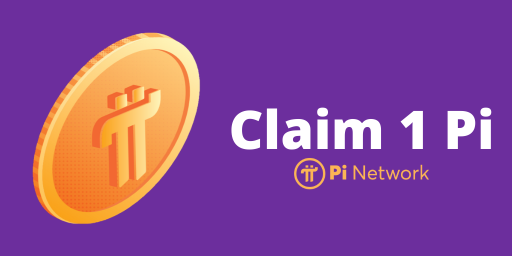

Pi Network is a digital currency project that aims to keep crypto mining accessible
as the centralisation of the first generation of currencies like Bitcoin has put them
out of reach of everyday users.The cryptocurrencey is skyrocketing,with
a huge amount of 18Mil followers.
This is a bank where you can exchange money and buy stuff online,
sell and earn like you want in your dreams,
The proffesionals have estimated the cost of one pi to be 100 dollars
for the starting and then will go up to 1000 dollars.
The time used for the mining may take alot,
but this wont keep us away from earning.
Is Pi network a scam?
Pi is not a scam. It is a genuine effort by a team of Stanford graduates
to give everyday people greater access to cryptocurrency.
Pi's core team is led by two Stanford PhDs and one Stanford MBA
, all of whom helped build Stanford's blockchain community.pi network is secure ,
and it is a good opportunity to collect PI coin by every day mining. Once it is
listed its value may reach upto 200 usd per coin. Same like bit coin its free now .
Pi network is 100% safe at moment. To be clear enough, PI network is its beta phase
where the network growth of the testnet is under progress. pi network is fastest
growing network with the 7+million user at moment. The only crypt token that's
mined through phone app is PI network.Some of the key differences between Pi Network
and other blockchains are the fact that rewards are paid out daily. They are not paid
out per block, and they are also spread across the entire network so as long as you
interact with the network.